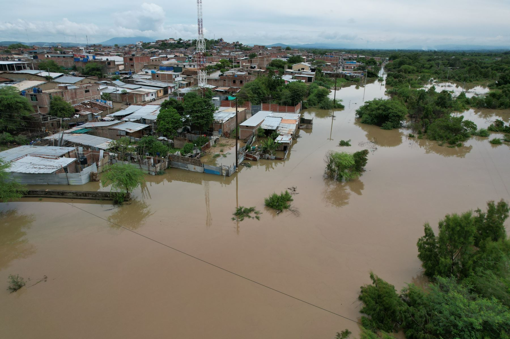

Refugios en el desierto
Después de las inundaciones de marzo de 2017, alrededor de 2.000 familias en Piura tuvieron que abandonar sus hogares. Muchas se trasladaron a zonas desérticas cercanas a la carretera Piura–Chiclayo, construyendo refugios improvisados con materiales limitados y sin servicios básicos como agua, electricidad o saneamiento.
“El calor y la falta de infraestructura hacían que cada día fuera un desafío para sobrevivir”.
Condiciones de vida
- Refugios improvisados de madera, plástico y cartón.
- Acceso limitado a agua potable y alimentos.
- Escasa asistencia médica y educativa.
- Familias enteras compartiendo espacios reducidos.
Resiliencia y organización
A pesar de las dificultades, las comunidades desplazadas se organizaron para compartir alimentos, construir caminos improvisados y proteger a los niños y ancianos. La solidaridad entre vecinos fue clave para sobrevivir durante semanas hasta recibir ayuda de autoridades y voluntarios.
Fuentes: RPP – “Familias afectadas por inundaciones de Piura se trasladan al desierto” • El Comercio – “Niño Costero: el drama de los desplazados en Piura”.